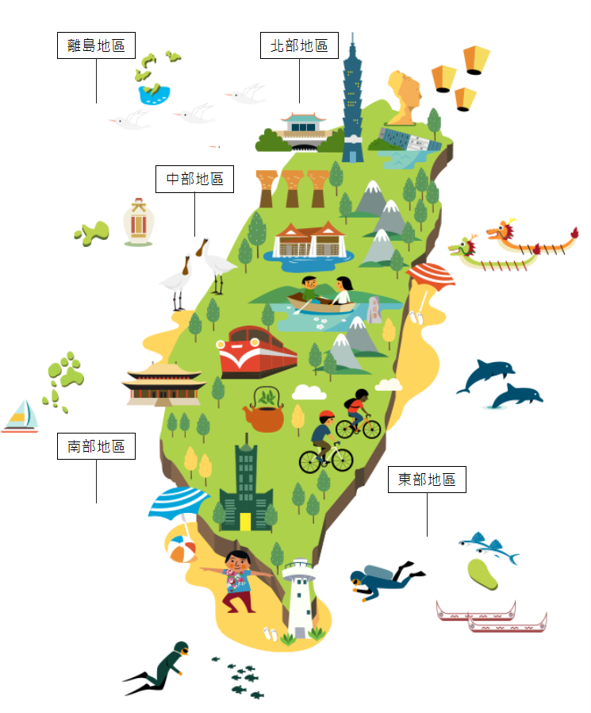

景點介紹
臺灣風光，多元細緻，不同角落的風情，都充滿了在地的故事和動人的情懷。歡迎旅遊臺灣體驗生活，探訪這座美麗的島嶼，旅行者的秘境，細品台灣人文風貌，跟台灣的滿滿人情味相遇！
臺灣以高山聳立聞名國際，有優美的海岸風光。北起擁有各類特殊海岸地形的東北角及宜蘭海岸國家風景區、北海岸及觀音山國家風景區，沿途山青水秀、天藍海深，廣闊的海天視野乃是此段的特色。經過風光明媚的東部海岸國家風景區及花東縱谷國家風景區的綠色走廊，其景色令人讚嘆與驚喜。一路往南，可達陽光四溢、具南國風味的大鵬灣國家風景區，就順著山勢還可一逛原民風情的茂林國家風景區，一探臺灣蝴蝶世界、魯凱石屋及大自然美景。
